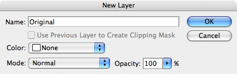
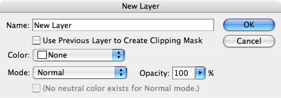
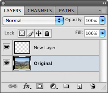

Per Layer Metadata Panel: Find Character ID Code to Register Events
The third part of the Per Layer Metadata Panel is finding the character ID code associated with actions/events in Adobe Photoshop. The actions/events that the developer will obtain is opening an image, converting the background layer to a regular layer, creating a new layer, selecting a different layer, and converting a regular layer to a background layer. The result is a JavaScript (JSX) output log showing the functions and character ID code of the actions/events committed by the user.
Instructions:
- Complete Setting Up Script Listener.
- Open Adobe Photoshop.
- Open PerLayerMetadataMiddle.jpg under the samples\sample pictures folder included with the Adobe Photoshop Panel Developer's Guide.
- Go to Layer > New > Layer from Background....
- Under Name:, type in Original and press OK.
 - Go to Layer > New > Layer....
- Under Name:, type in New Layer and press OK.
 - Go to the Layers Panel or go to Window > Layers or press F7.
- Select the layer called Original
 - Go to Layer > New > Background from Layer.
- Close Adobe Photoshop.
- Open ScriptingListenerJS.log on the Desktop with a text editor.
- The code within ScriptingListenerJS.log should be similar to below:
// ======================================================= var idOpn = charIDToTypeID( "Opn " ); var desc1 = new ActionDescriptor(); var idnull = charIDToTypeID( "null" ); desc1.putPath( idnull, new File( "~/samples/sample pictures/PerLayerMetadataMiddle.JPG" ) ); executeAction( idOpn, desc1, DialogModes.NO ); // ======================================================= var idsetd = charIDToTypeID( "setd" ); var desc2 = new ActionDescriptor(); var idnull = charIDToTypeID( "null" ); var ref1 = new ActionReference(); var idLyr = charIDToTypeID( "Lyr " ); var idBckg = charIDToTypeID( "Bckg" ); ref1.putProperty( idLyr, idBckg ); desc2.putReference( idnull, ref1 ); var idT = charIDToTypeID( "T " ); var desc3 = new ActionDescriptor(); var idNm = charIDToTypeID( "Nm " ); desc3.putString( idNm, "Original" ); var idOpct = charIDToTypeID( "Opct" ); var idPrc = charIDToTypeID( "#Prc" ); desc3.putUnitDouble( idOpct, idPrc, 100.000000 ); var idMd = charIDToTypeID( "Md " ); var idBlnM = charIDToTypeID( "BlnM" ); var idNrml = charIDToTypeID( "Nrml" ); desc3.putEnumerated( idMd, idBlnM, idNrml ); var idLyr = charIDToTypeID( "Lyr " ); desc2.putObject( idT, idLyr, desc3 ); executeAction( idsetd, desc2, DialogModes.NO ); // ======================================================= var idMk = charIDToTypeID( "Mk " ); var desc4 = new ActionDescriptor(); var idnull = charIDToTypeID( "null" ); var ref2 = new ActionReference(); var idLyr = charIDToTypeID( "Lyr " ); ref2.putClass( idLyr ); desc4.putReference( idnull, ref2 ); var idUsng = charIDToTypeID( "Usng" ); var desc5 = new ActionDescriptor(); var idNm = charIDToTypeID( "Nm " ); desc5.putString( idNm, "New Layer" ); var idLyr = charIDToTypeID( "Lyr " ); desc4.putObject( idUsng, idLyr, desc5 ); executeAction( idMk, desc4, DialogModes.NO ); // ======================================================= var idslct = charIDToTypeID( "slct" ); var desc6 = new ActionDescriptor(); var idnull = charIDToTypeID( "null" ); var ref3 = new ActionReference(); var idLyr = charIDToTypeID( "Lyr " ); ref3.putName( idLyr, "Original" ); desc6.putReference( idnull, ref3 ); var idMkVs = charIDToTypeID( "MkVs" ); desc6.putBoolean( idMkVs, false ); executeAction( idslct, desc6, DialogModes.NO ); // ======================================================= var idMk = charIDToTypeID( "Mk " ); var desc7 = new ActionDescriptor(); var idnull = charIDToTypeID( "null" ); var ref4 = new ActionReference(); var idBckL = charIDToTypeID( "BckL" ); ref4.putClass( idBckL ); desc7.putReference( idnull, ref4 ); var idUsng = charIDToTypeID( "Usng" ); var ref5 = new ActionReference(); var idLyr = charIDToTypeID( "Lyr " ); var idOrdn = charIDToTypeID( "Ordn" ); var idTrgt = charIDToTypeID( "Trgt" ); ref5.putEnumerated( idLyr, idOrdn, idTrgt ); desc7.putReference( idUsng, ref5 ); executeAction( idMk, desc7, DialogModes.NO );Code Walkthrough: There are five parts of the code generated by actions/events made in Adobe Photoshop:
- Open the PerLayerMetadataMiddle.jpg file under the samples\sample pictures folder.
- Convert the background layer to a layer called Original.
- Make a new layer called New Layer.
- Select the layer called Original.
- Make the layer called Original to a background layer.
There is a special four character ID code placed as a parameter of the functioncharIDToTypeIDfound on the first line of each part of the code. The character ID key to call the actions/events described earlier areOpn,setd,Mk, andslct. The two character ID code will be used later in the tutorial.
Note: Other actions or events could also contain theOpn,setd,Mk, andslctparameter although a different block of code is produced. - Close the text editor.